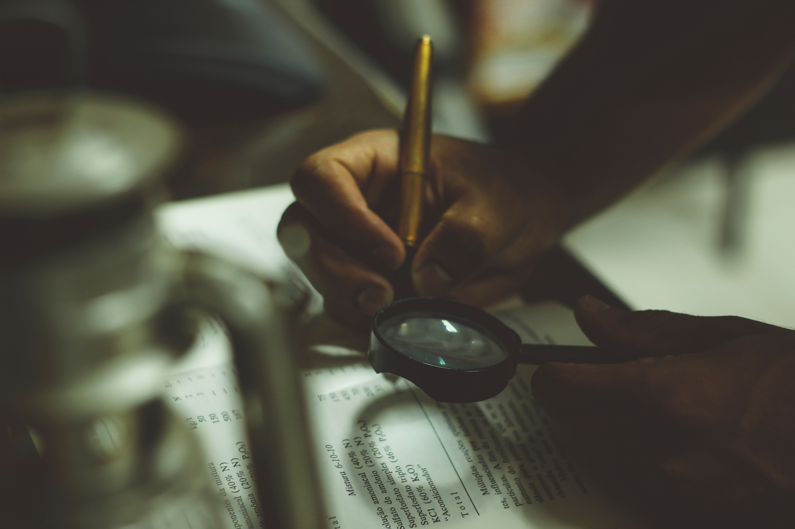

Develop recommendations for evaluation strategy and statistical analysis of U.S. Army proposed test designs to ensure rigorous analysis can be performed, with regard to assign programs (Army and Marine Corps Mission Command Information Technologies).
Design and implement analysis toolsets for processing data and conducting statistical analysis.
Analyze data and aid in the preparation of reports to U.S. Congress regarding efficacy, suitability, and survivability of assigned programs.
Notable Outcomes
Developed toolsets for tracking messages through application layer software, extracting positional data from image/video, and processing system failure data for statistical analysis.
Guided Army instrumentation development, enabling the effective use of over $10 million dollars of test funding.
Generated insights for software developers and Congressional staffers to understand the performance of software systems for Soldier use.
Member of the Shock and Detonation Physics Group (M-9)
Responsibilities
Design experiments to better understand properties and performance characteristics of materials relevant to the national nuclear stockpile.
Develop and implement new experimental approaches and tools for measuring material properties.
Design and implement analysis toolsets for processing data and gathering insights on material performance.
Analyze data and prepare publications on research for peer-reviewed publication.
Maintain relationships with funding agencies to direct future research.
Notable Outcomes (beyond those noted for other positions)
Obtained postdoctoral funding, amounting to $800,000 over two years, supporting independent research.
Developed multiple new instrumentation tools for use in central-user research facilities, such as the Advanced Photon Source at Argonne National Laboratory.
Presented general public lectures on research results to highlight importance of work.
Role: Postdoctoral Research Associate and Course Instructor for Engineering Design
Member of the College of Engineering and Center for Science at Extreme Conditions
Responsibilities
Conducted engineering research into new instrumentation technologies, for use in central-user facilities.
Managed two graduate and three undergraduate research projects
Collect data on performance of instrumentation tools and present/report on findings in peer-reviewed journals.
Support operations of user facilities within the Center for Science at Extreme Conditions campus.
Instructed second-year undergraduate engineering design course, involving two class sessions, four laboratory sessions, and three recitation sessions per week.
Notable Outcomes (beyond those noted for other positions)
Deployed three new instrumentation setups for use both at University of Edinburgh and at the ISIS Pulsed Neutron Source.
Aided three students (one graduate and two undergraduate) in graduating from degree programs.
Streamlined experimental schedules and approaches, increasing user capacity at on-site research facilities.
During my time at the Institute for Defense Analyses, my core analytical area involved mission command systems. These
systems involve multiple aspects of data availability across echelons and battlefields, including situational awareness
data (e.g. where others are located and moving to and what they see) and command functions (e.g. creating and issuing orders).
As a central part of this type of assessment, I developed techniques for parsing, matching, and reporting on electronic data and messages
as they move between locations and appear to users. In my data portfolio, you will find a set of walkthroughs describing and demonstrating
how some of this process is accomplished.
In addition to the technical analysis described in the data portfolio, I have also created modules for:
Please feel free to check out any of the information presented here and send a message if you have questions.
Graphical Data Extraction
In the assessment of Mission Command tools, one of the capabilities required is to extract data present on visual map
tools or other graphical representations. With some clever use of Python packages, I have developed and implemented
a tool package capable of enabling the user to extract this information in a simple way, using their mouse and computer.
This method makes use of the MGRS, Open-CV, and Pillow packages within Python and uses two user-defined reference points on the image
to establish graphical conversions for the data on the map. The user can then identify as many graphical items on the map as they
wish and the program will store these and convert them.
The intent of such a tool is to make the graphical data available visually, available for quantitative analysis when compared with data
from other sources.
Navigation
Test Incident Report Analysis

One important component of system analysis is the collective metrics associated with Reliability, Availability, and Maintainability.
In the Army related operational assessments of this type, documents referred to as Test Incident Reports (TIRs) are used to document various failures
and used to determine each of these values.
However, these TIRs are simple text documents, which makes data handling and analysis difficult. In order to facilitate a simpler analysis and data centralization
this project involved creating a data pipeline to ingest these text documents, perform some rudimentary calculations, and build a toolset for a more general user to employ.
Using the wxPython framework, the ingestion is accomplished via a GUI interface that cleans and formats the TIR data into spreadsheet and word document forms, depending on the data.
These are annotated and can be used iteratively during test events to monitor data quality and maintain notations.
Beyond this, some tutorial overviews are included in my Data Science Portfolio repository on GitHub discussing how to take some strawman data and
clean and prepare it. In the near future, overviews pertaining to the ingestion of data, graphing and reporting on this data will be uploaded.
I'm a data scientist and condensed matter physicist with a passion for looking at problems
from unconventional angles. As a result, I have made a career of unique ways to
view problems and design creative solutions. For specifics on my background, please look at my
resume.
In addition to my professional background, I enjoy
ice skating, reading, hiking, travelling, and coding projects (the side version of course).
If you have a project that you'd like some help with, feel free to message me at jacobmatk@aol.com and we can chat about it.